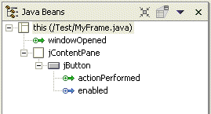
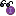
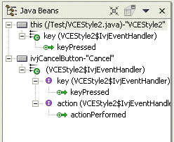

The Java Beans view shows all of the events set on the components in your visual class.
Events can be seen using the Java Beans view. This is a tree view that shows the class being edited and its Java beans, and container classes with their components displayed as children.
In addition to showing JavaBeans and their container/component relationship, the Java Beans view has three modes to show events:
- No Events
- Show Events
- Expert Events
To view the events on a component:
- On the Java Beans view toolbar, select the drop-down menu (arrow button).
- Select one of the following:
- Show Events
- Expert Events
When Show Events is selected, the events used by each component are shown as children in the tree. For an event to be used by a component, there must be a registered listener, and the callback method must have some code within it. The list of recognized source code patterns used by the visual editor are described in the source code patterns for events section. The Java Beans view below shows the events, where the JFrame has a windowOpened event, and the button has an actionPerformedEvent. The button also has a PropertyChangeListener for its enabled properties, and this is shown with a blue arrow instead of green.
Each event is made up of the source component (the JFrame or JButton in the example being used), a class that implements the listener interface that is added to the source using addXXXListener(XXXListener), and some code within the body of the callback method. In the Show Events mode, the component source is shown with its callback methods displayed as children. Items in the tree for events are green arrows
 , and blue arrows
, and blue arrows  if the items are
for property change events.
if the items are
for property change events.In the Expert Events mode, each listener for the component is shown as a child tree node, and the events are shown beneath each listener. This increases the number of items in the tree, but it shows more detail about how the events are attached to the components. The option of the two modes lets you decide which level of detail you wish to work with.
In expert mode the icon used for the listener shows the type of listener class. If the listener is an anonymous inner class that implements the listener interface, the  icon is used, and if the listener is an anonymous inner class that extends a listener adapter class, the
 icon is used.
icon is used.In addition to anonymous inner classes being used for listeners, named classes and shared listeners are also parsed and recognized by the visual editor. If the listener is not anonymous in expert mode, then the icon is
 . If the listener is shared by more than one component,
the
. If the listener is shared by more than one component,
the  is
used. If the listener class is used by a single event, then these are
listed as children of the listener. However, if the listener class is used
by more than one event listener interface for the component, then in Expert
mode these listener interfaces are shown as separate children of the listener
class. This is shown below:
is
used. If the listener class is used by a single event, then these are
listed as children of the listener. However, if the listener class is used
by more than one event listener interface for the component, then in Expert
mode these listener interfaces are shown as separate children of the listener
class. This is shown below:

The source for this is shown below. The inner listener class IvjEventHandler is used once by the first button (this) for a keyPressedEvent, and twice by the "Cancel" button, once for keyPressed (that is part of the key event) and another time for actionPerformed (that is part of the action event).
class IvjEventHandler implements java.awt.event.ActionListener, java.awt.event.KeyListener { public void actionPerformed(java.awt.event.ActionEvent e) { if (e.getSource() == VCEStyle2.this.getCancelButton()) connEtoC3(e); }; public void keyPressed(java.awt.event.KeyEvent e) { if (e.getSource() == VCEStyle2.this.getCancelButton()) connEtoC2(e); if (e.getSource() == VCEStyle2.this) connEtoC1(e); }; public void keyReleased(java.awt.event.KeyEvent e) {}; public void keyTyped(java.awt.event.KeyEvent e) {}; };